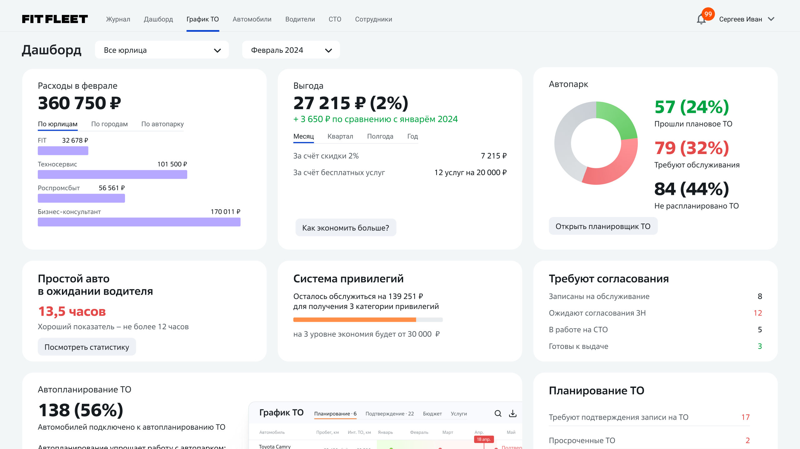
FIT FLEET: Автоматизация обслуживания автопарка.
Менеджеры автопарков планировали ТО в таблицах и сторонних сервисах. Я спроектировала график внутри FIT FLEET, который показывает сроки обслуживания каждой машины с первого взгляда и готовит запись на СТО. Он доступен всем клиентам.
Я спроектировала график и дизайн-систему, собрала все интерактивные прототипы и участвовала в интервью с пользователями вместе с дизайн-лидом и PM. Главный экран мы проектировали вместе с дизайн-лидом. После каждой итерации я обновляла макеты. После разработки я проводила ревью реализованного дизайна вместе с инженерами.
До графика клиенты FIT FLEET вели ТО в Excel и заполняли таблицы вручную. Другие пользовались сторонними сервисами без связи с FIT FLEET. Автопарки у них уже были в платформе: загрузить парк из Excel просто, можно сразу все машины.
Нужен был график ТО внутри FIT FLEET, чтобы менеджерам не приходилось переключаться между инструментами. Автопарки бывают от 10 до 1000 машин, и один экран должен работать для обоих случаев.
График был новым инструментом в платформе, поэтому успехом считалось, что клиенты им пользуются.
В первой версии были крупные разноцветные иконки. Одна иконка означала один заезд на ТО или шиномонтаж.
В первом раунде интервью выяснилось, что у некоторых клиентов на одном экране будет около 50 иконок. При большом парке и дополнительных событиях иконки сливались в одно цветное пятно. Тестируемым требовалась около минуты, чтобы понять, что они видят.
Я заменила иконки на небольшие неброские точки на линии времени. После этого им хватало 10–20 секунд, чтобы увидеть, какая машина когда и куда поедет.
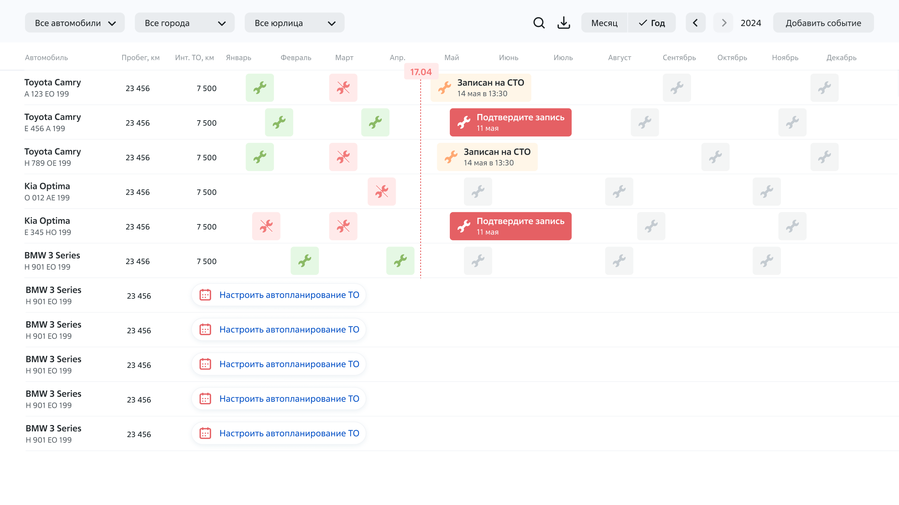
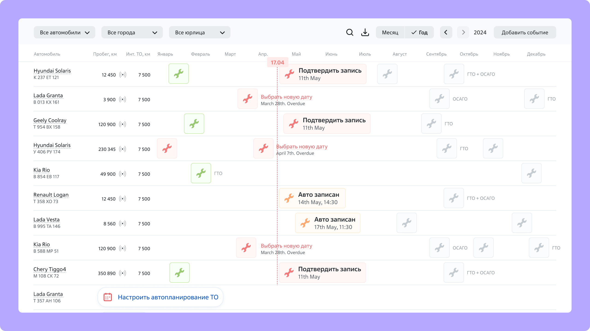
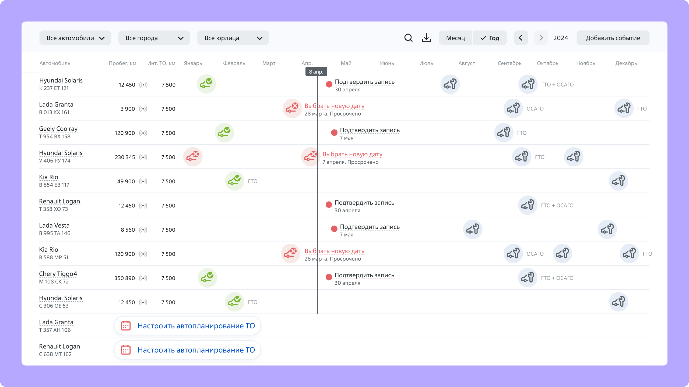
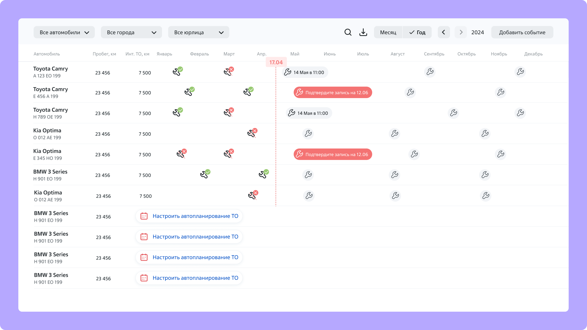
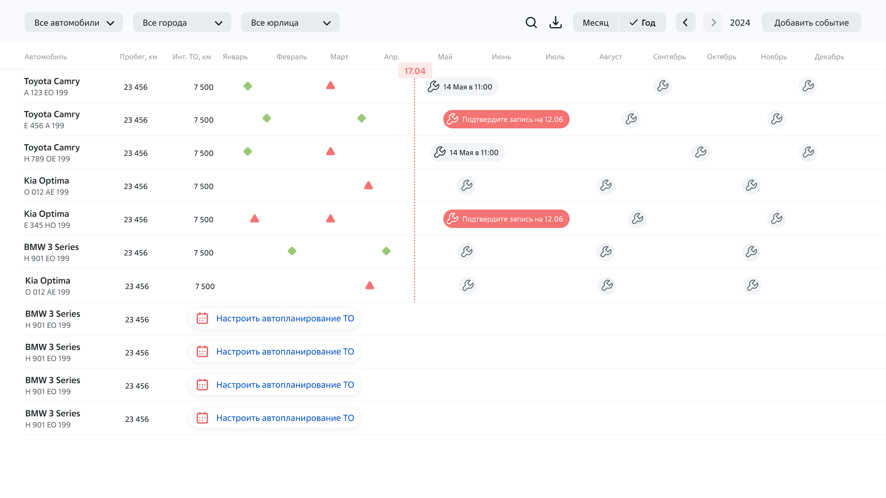
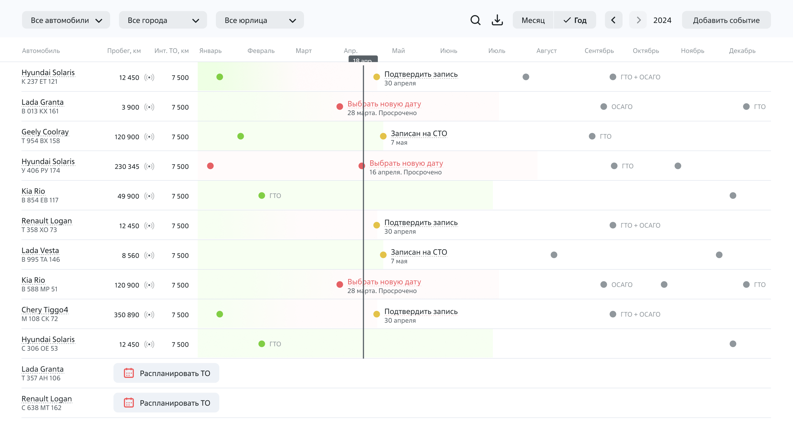
Шесть подходов к графику. От части отказались до тестов, от других после интервью. Остались небольшие аккуратные точки.
Клиенты сами просили универсальный инструмент. Кроме ТО в график добавляются пользовательские события, например окончание страховки или доверенности на водителя.
Менеджер открывает график утром и сразу видит, у каких машин нужно продлить документы. На том же экране видно, у каких через две недели ежегодный техосмотр.
Годовой график.
Платформа сама предлагает записать машину на СТО, и все поля уже заполнены. Менеджер проверяет данные и выбирает СТО, дату и время.
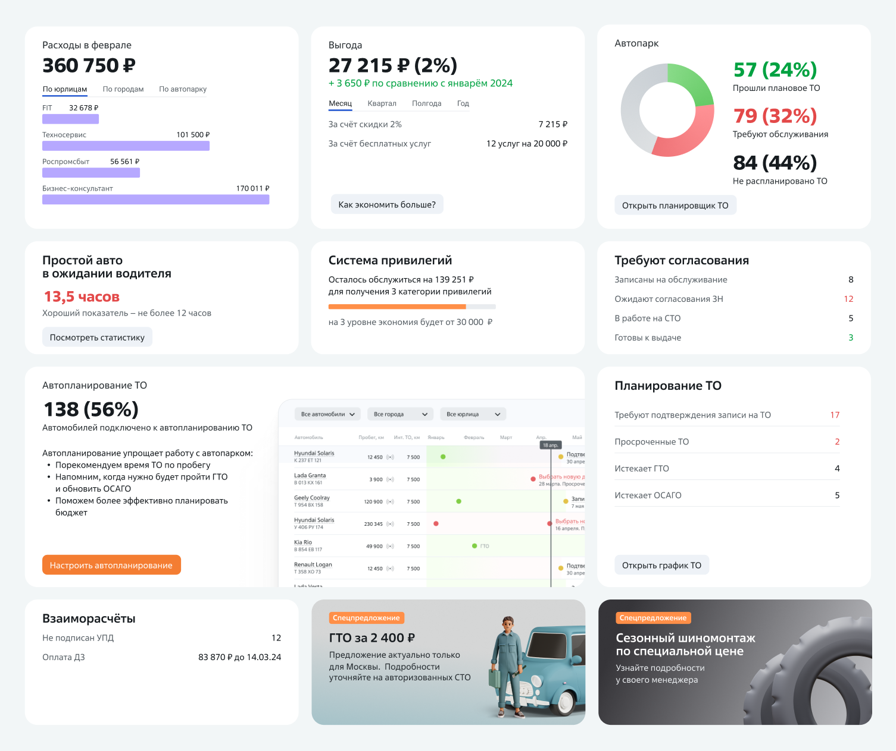
Главный экран с состоянием автопарка. Отсюда открываются график и автопланирование.
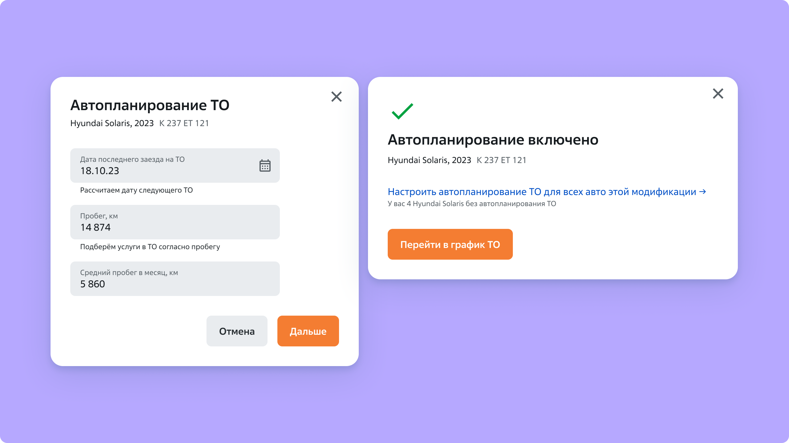
Предложенная запись с предзаполненными полями.
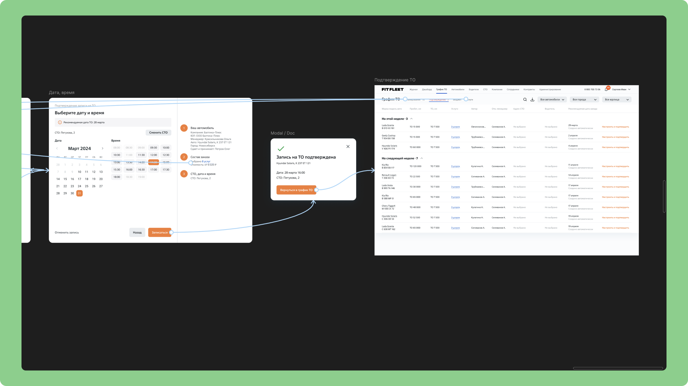
Шаги записи: дата и время, подтверждение и список заездов, созданных автоматически.
У каждой машины есть рекомендации производителя: какие диагностики на каком пробеге и какие работы проводить. Мы загружаем эти рекомендации в систему, и планировщик добавляет услуги в список при записи на СТО.
Менеджер может отредактировать список для марки и модели. Он добавляет или убирает услуги, нужные в его регионе, например из-за холодных зим или плохих дорог. Изменённый список сохраняется для всех машин той же марки и модели.
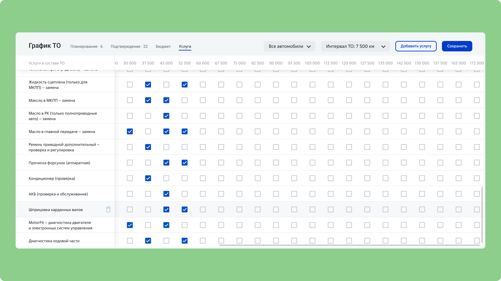
Списки услуг по марке и модели.
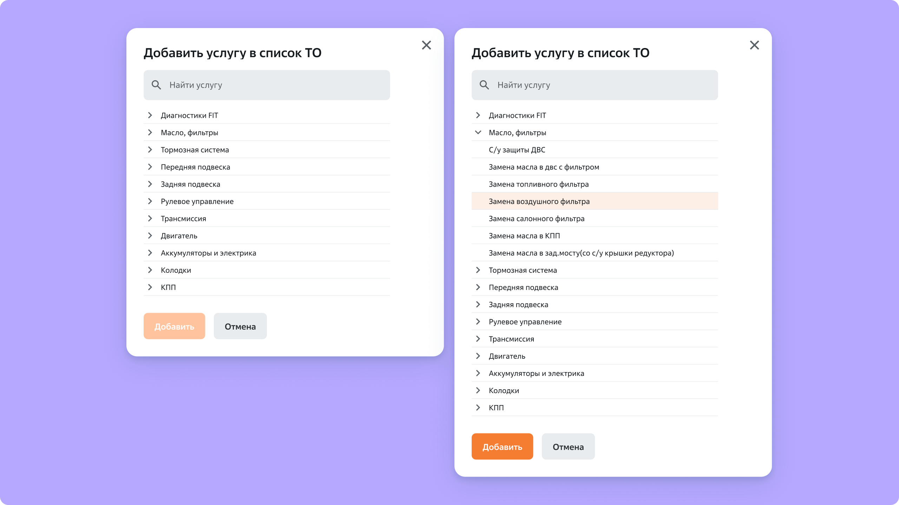
Добавление услуги под регион.
Мы с лидом собирали референсы отдельно, затем провели совместный брейншторм и выбрали гипотезу. После этого шли прототип и интервью. Каждый раунд шёл по одному циклу: прототип, интервью, правки, следующее интервью. В раунде участвовали два-три человека, и некоторые возвращались, чтобы обсудить изменения между раундами. Участники: завгары (менеджеры автопарков) из разных юрлиц с парками от 10 до 1000 машин. Я участвовала в интервью вместе с дизайн-лидом и PM.
Чтобы 100+ экранов оставались единообразными, я построила дизайн-систему на основе Material Design и адаптировала компоненты под нужды клиента. После каждого раунда я обновляла макеты.
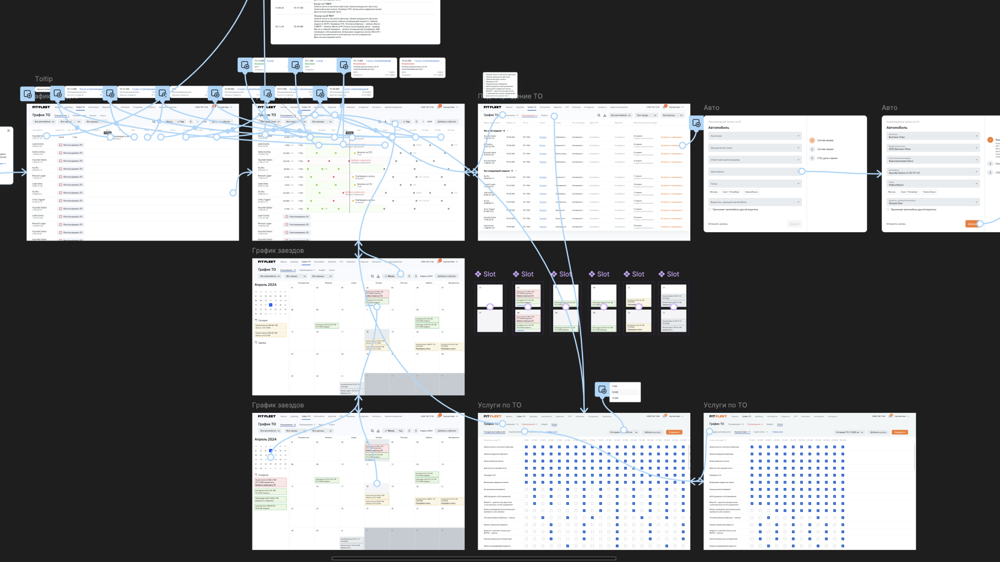
Часть прототипа, на котором проходили интервью: экраны и связи между ними.
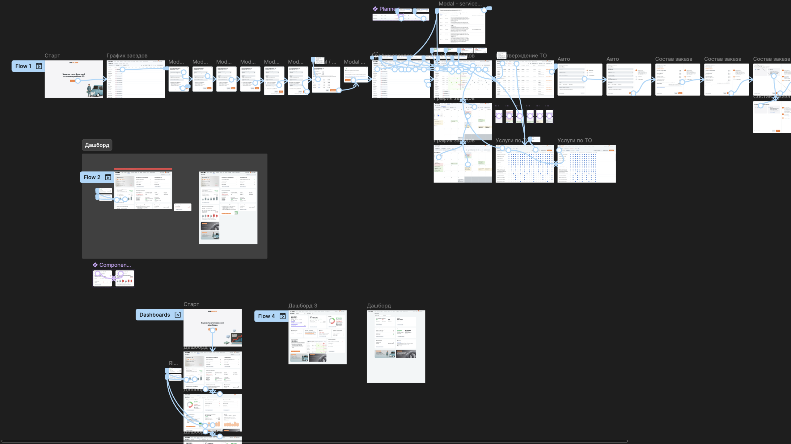
Файл Figma с потоками графика и вариантами дашборда.
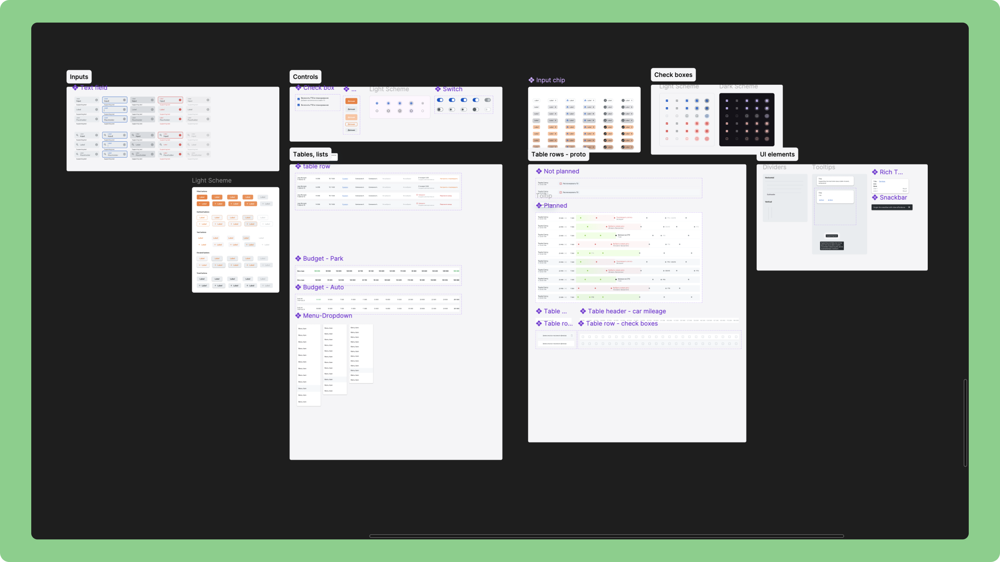
UI-кит на основе Material Design.
Месячный календарный вид входил в прототип и проверялся в одном из раундов интервью. В последний момент PM клиента решил не брать его в разработку. Собрать его вместе с графиком было технически сложно для инженеров, а их план уже был занят другими приоритетами. В первый релиз вошла линия времени.
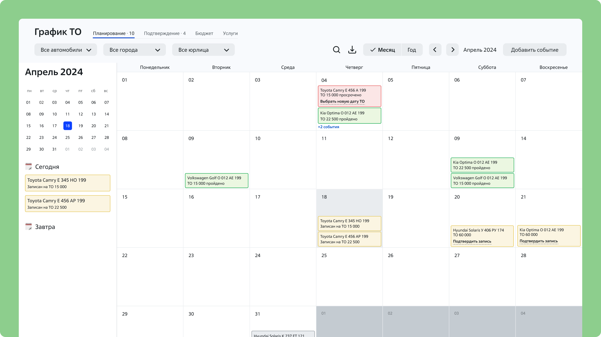
Месячный календарный вид. В релиз не вошёл.
Сложный утилитарный сервис не нужно украшать. Украшения замедляют сканирование и работу, когда данных много.
С современными ИИ-инструментами я бы добавила ежедневную сводку для менеджеров автопарка. ИИ анализировал бы состояние парка и каждое утро выдавал бы список срочных задач и просроченных пунктов.


Let's talk.
Напишите, если строите что-то интересное и хотите свежий взгляд. Я читаю всё, что приходит.